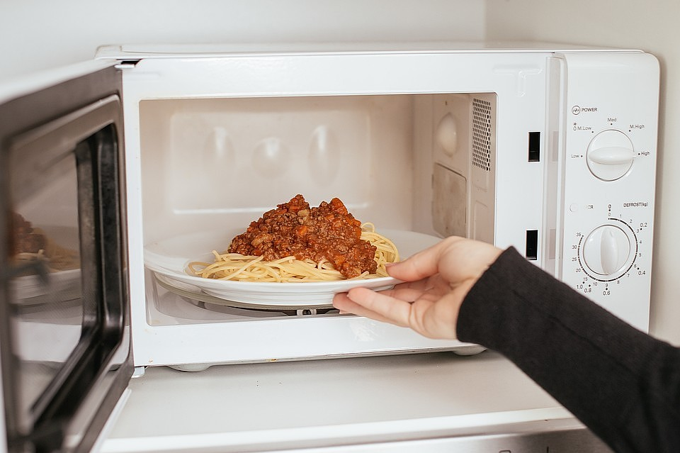

Микроволновая печь - это бытовой электроприбор, который предназначен для быстрого приготовления или быстрого подогрева пищи. Используется микроволновка также и для разморозки продуктов.
Она работает на частоте 2.45 ГГц (длина волны 12.24 см). От обычно духовки или печки микроволновка отличается тем, что в ней разогрев продуктов происходит не с поверхности, а по большей части объёма продуктов, содержащих воду. Это связано с тем, что почти во все пищевые продукты радиоволны проникают на большую глубину, что способствует сокращению времени приготовления.
Впервые способность сверхвысокочастотного излучения к нагреванию продуктов открыл американский инженер Перси Спенсер. Он и получил патент на микроволновую печь. На тот момент он работал в компании Raytheon, которая занималась производством оборудования для радаров.
Он запатентовал свое изобретение в 1946 г. Первая микроволновая печь была создана компанией Raytheon. Она предназначалась для быстрого промышленного приготовления пищи. Высота этой печи почти была равна человеческому росту, а весила она 340 кг. Мощность первой микроволновки равнялась 3 кВт. Это почти вдвое превышает мощность современной бытовой СВЧ-печи. Использовали ее в солдатских столовых.
Первую серийную бытовую микроволновку выпустила в 1962 г. японская компания Sharp. Сначала это изделие не пользовалось большим спросом. Массовое сознание настораживали сверхвысокие частоты (СВЧ), которые считались опасными.
В СССР производить первые микроволновые печи начал завод ЗИЛ.
Принцип действия микроволновкиПриготовления пищи в микроволновке происходит за счет электромагнитного возбуждения молекул воды, которые содержатся в продуктах питания.
Волны мгновенно проникают на большую глубину и поглощаются молекулами воды. При этом происходит их возбуждение. Тепловые колебания молекул воды усиливаются. Молекулы сталкиваются друг с другом. Это и приводит к возрастанию температуры.
При обычном способе приготовления пищи на огне происходит такое же усиление колебаний и столкновение молекул. Однако разница заключается в том, что на огне возбуждение молекул медленными темпами передается от наружных слоев к внутренним. А вот энергия в микроволновке мгновенно проникает на глубину от 2,5 до 5 см. Самые толстые куски для приготовления рекомендуется разрезать. Нужно отметить, что к существенному нагреву продуктов в микроволновке приводит наличие в них соли. Но соль должна быть полностью растворена. Однако если перед приготовлением посолить мясо, птицу или овощи длительного хранения, то они будут слегка суховатыми и жестковатыми. Это связано со способностью соли вытягивать влагу. Такие продукты рекомендуется солить уже после приготовления.
Какую микроволновку выбрать?При выборе печи, прежде всего, необходимо определиться с количеством едоков. Печи, камеры которых имеют объем в 16-19 литров, подходят для семьи из 1-2 человек. Такая печь способна вместить курицу небольшого размера или кастрюлю средней высоты.
Для семьи из 3-4 человек лучше взять микроволновку с объемом от 23 литров. Для семьи из 5-6 человек необходима печь, объем камеры которой составляет до 38-41 литра. В такой печи можно легко приготовить даже гуся, индейку или большой праздничный пирог.
В СВЧ-печи часто имеется и гриль, который может быть тэновым или кварцевым. Кварцевый гриль работает быстрее и отличается большей экономичностью. Его проще поддерживать в чистоте. Тэновая спираль может подниматься и опускаться и менять свое положение. Это обеспечивает более равномерный прогрев продуктов.
Микроволновка и витаминыПри приготовлении пищи в микроволновке в продуктах сохраняется больше витаминов, чем при использовании обычной плиты.
Институт питания Академии наук РФ проводил экспертизу еды, которая была приготовлена в микроволновке. При этом специалисты проверяли уровень сохранения витаминов в овощных и мясных блюдах.
Результат проверки показал, что после обработки в печи самый ценный витамин С сохранился на 75-98%, в зависимости от вида продуктов. Что касается традиционных способов приготовления, то там сохранность витаминов составляет только 38-60%.
Посуда для микроволновкиСегодня продается большое количество разнообразной посуды для микроволновки. Она изготавливается из огнеупорного стекла или особой пластмассы.
Но можно пользоваться и самой обычной посудой. Подойдет фарфор, пластик, керамика, фаянс и т.д. Но нужно следить, чтобы на посуде не было золотых и серебряных ободков и узоров. Эти краски содержат металл, проводящий ток, что может вызвать слабые электрические разряды. Нельзя использовать метталическую посуду. Она может испортить печь.
Готовить и разогревать продукты в микроволновке можно даже в бумажных пакетах, стаканчиках или завернутыми в вощенную бумагу.
Продаются даже оригинальные пароварки-скороварки. Они представляют собой целую систему сосудов из жаростойкого пластика.
Меры предосторожности при работе с микроволновкойПри использовании микроволновки необходимо соблюдать некоторые меры предосторожности. В микроволновой печи нельзя варить яйца, т.к. они взрываются из-за сильного испарения воды внутри. Не следует нагревать жидкость в герметично закрытых ёмкостях.
Не рекомендуется нагревать воду в микроволновке, т.к. она может сильно перегреться. Перегретая жидкость может вскипеть слишком резко и неожиданно.
Риск повышается при нагревании в сосудах, имеющих гладкую и однородную внутреннюю поверхность. Из сосуда с узким горлышком перегретая вода в момент начала кипения может вылиться.
Некоторые люди считают, что микроволновка своим излучением может нанести серьезный вред здоровью. Однако ученые доказали, что уровень ее излучения слишком невысок для этого.
Ошибочно считается также, что микроволновка может менять молекулярную структуру продуктов, что приводит к онкологическим заболеваниям. Но на самом деле это не так.
Автор: Верещагина Софья